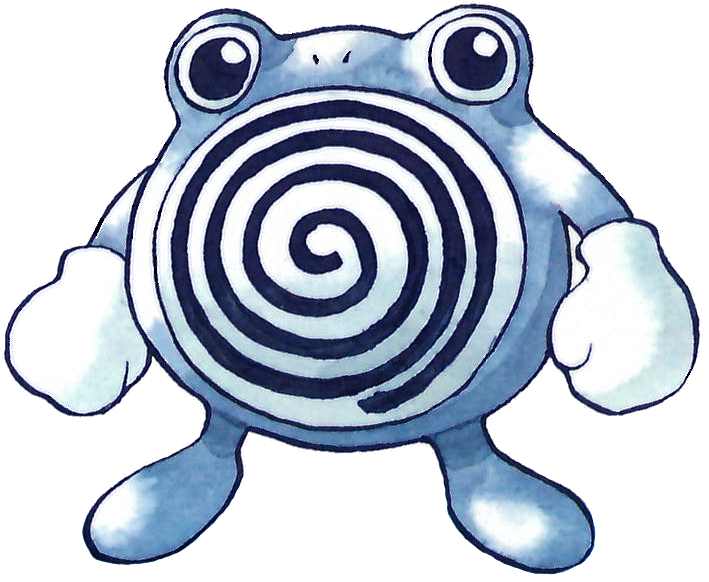

Poliwhirl (ニョロゾ Nyorozo en japonés) es un Pokémon de tipo agua introducido en la primera generación. Es la evolución de Poliwag. Es conocido por ser el Pokémon favorito de Satoshi Tajiri.
Evoluciones de Poliwhirl

Su nombre podría venir de la unión de las palabras en inglés polliwog (palabra incorrecta en desuso para referirse a renacuajo) y whirl (remolino, por el dibujo de su estómago).
Su nombre japonés, Nyorozo, podría venir en parte de ニョロニョロ nyoronyoro (el sonido de una serpiente al reptar).
Su nombre francés, Têtarte, proviene de las palabras têtard (renacuajo) y tarte (puñetazo).
Cuando Poliwag evoluciona a Poliwhirl, la espiral de su vientre cambia de sentido y desaparecen la cola y la boca. Aun así, posee la capacidad de producir sonidos. Poliwhirl esta aun basado en un renacuajo, solo que más desarrollado que su preevolución, con un cuerpo con mayor musculatura que le permite mantenerse más tiempo en tierra firme, sin embargo sigue prefiriendo estar en el agua. Su piel es muy esponjosa, mientras que la parte de su espiral es muy suave.
Poliwhirl puede estar mucho tiempo fuera del agua sudando un fluido aceitoso para mantener su cuerpo baboso y húmedo, gracias a esto también le permite que las garras de los atacantes se resbalen, permitiendo a este Pokémon el salir ileso y escapar de ellos. Puede llegar a utilizar ataques de lucha, pero debido a que sus músculos no están desarrollados aún para luchar prefiere utilizar ataques de tipo agua que lanza desde el centro de su espiral. Cuando es atacado usa la espiral de su pecho que se ondula delicadamente para dormir al enemigo y así poder escapar, en algunos lugares son usados como alternativa a las nanas para dormir a los niños. Si se le reseca la piel, se mermará su estado de salud por lo que hay que procurar que siempre se encuentre bien hidratado.
Vive principalmente cerca del agua, saliendo de ella solo para buscar algún Pokémon insecto para comer, sin embargo, una vez atrapado a uno, regresará a comérselo en la seguridad del agua, ya que en ella tiene menos enemigos naturales que en tierra firme, dentro del agua también puede buscar algún Pokémon pez que le sirva de sustento.
Este contenido proviene de wikidex.net, y debe darse atribución a sus autores, tal como especifica la licencia.
Se prohíbe su uso a PlagioDex (el wiki de FANDOOM), por copiar reiteradamente sin dar atribución
Página creada por Luis Felipe Restrepo y Daniel Felipe Gutierrez
Información extraida de: Poliwhirl. (s. f.). WikiDex. Recuperado 5 de noviembre de 2022, de https://www.wikidex.net/wiki/Poliwhirl